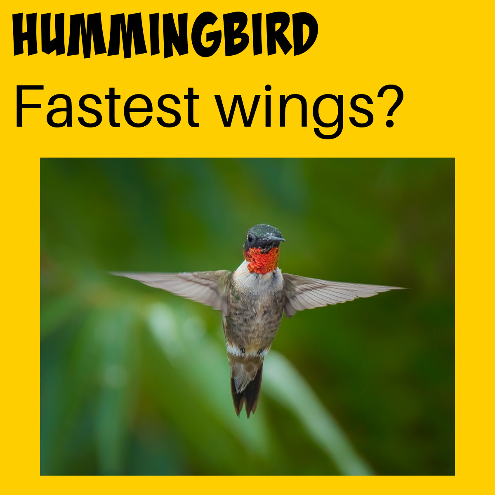

PUFFERFISH – AN AMAZING ABILITY TO PUFF UP
The pufferfish is not a fish to cross. Pufferfish have stomachs that have evolved to be super stretchy, allowing them to inflate with water to scare predators away.
Pufferfish also contain a deadly toxin making them highly dangerous if eaten!
HUMMINGBIRD – SUPER FAST WINGS
Hummingbirds flap their wings so fast it’s a blur to the human eye. This very clever adaptation means they are the only bird that can fly backwards ( handy for avoiding predators ) and can hover for a long time!
PLATYPUS – ELECTRIC FIELD DETECTING BILL
The Platypus is a unique species that appears to be a blend of several animals you’re probably familiar with. It has webbed feet and a bill like a duck, a tail like a beaver and a fur like an otter! Don’t be fooled by its cuteness though, as males have a venomous spur near their back leg!
One very interesting adaptation of the Platypus is that its special bill can detect electric fields generated by other animals, which helps it hunt for food.
STICK INSECTS – SUPER CAMOUFLAGE
Stick insects have a camouflage superpower! They usually look like either sticks or leaves and can hide remarkably well in their natural environment.
NAKED MOLE RATS – INTERESTING INCISORS
Naked Mole Rats live underground. They can’t see or hear very well but have special long incisors that can move independently of each other and very strong jaws. This unique adaptation allows them to tunnel underground for miles!
EAGLE – SUPER SHARP VISION
Eagles have some of the sharpest vision of all animals. They have very large eyes for their skull size and a lot more cells on the back of the eye than humans allowing them to see more clearly and for greater distances.
Eagles also have a 340-degree field of vision compared to the 180 degrees a human has.
However, eagles are not famous for their night vision. Eyes like an owl or a cat are better for seeing a night!